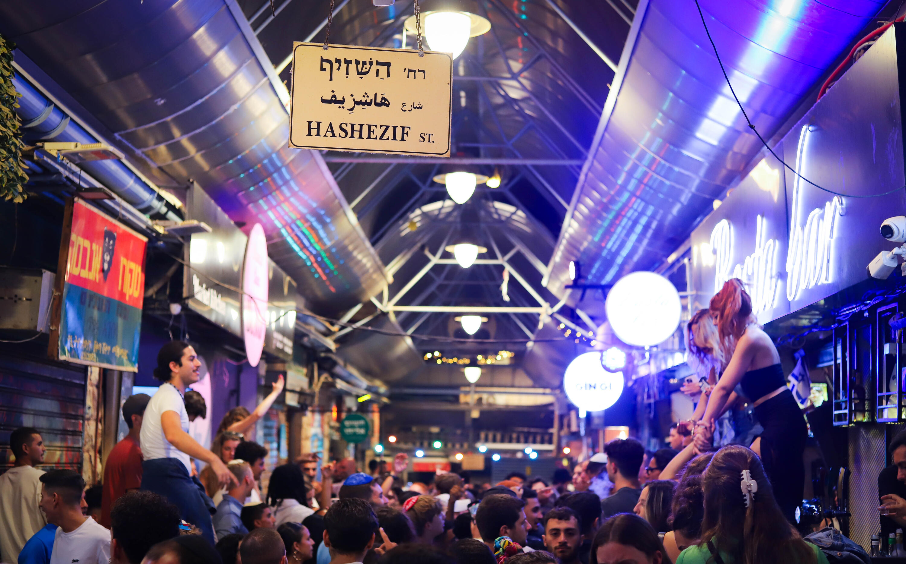

שוק מחנה יהודה (לילה)
חווית בילוי ייחודית: הדוכנים נסגרים והשוק הופך למסיבת רחוב גדולה.
לפרטים נוספים →
מגוון עצום של פאבים וברים קטנים (כמו ה'טרייפל', ה'שוקה' וה'בר הסירות') המציעים קוקטיילים, בירות, אוכל רחוב ומוזיקה חיה.
- אזור: רחוב עץ חיים וסמטאות השוק
- סגנון: שמח, המוני, פתוח
- מומלץ: לטייל בין הברים ולטעום מכל אחד.